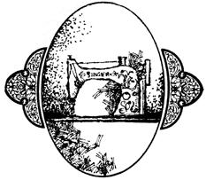

Standing in front of the living room window in my friend Ann's apartment is a rectangular piece of old woodwork. One side of its front contains a bank of drawers (with ornamental pulls that have mostly been knocked off in the course of long use). The four doors in its center, however, retain their carved faces untouched, as does the long panel on the side opposite the drawer bank. The device's plain wooden top is surmounted by a second lid located approximately in the center.
An antique cabinet, possibly? Well, yes in a way. The object is an old Singer pedal sewing machine, with the sewing head let down and hidden behind the center panels. Lift the second top and you trigger a powerful spring that pops the mechanism up like a jack-in-the-box. The central doors-when swung into the cabinet and under the machine-help to support the works and at the same time reveal the grille-design pedal. The drawers contain supplies, and the long door on the other side hides the pulley which converts the pumping of the treadle into movement of the machine's parts.
Operating the sewing machine is simplicity itself. Just start it by spinning the flywheel mounted on its right side in the direction you want to stitch: toward yourself for forward stitches and away for backstitches. At the same time, begin to work the pedal up and down with your feet. The faster you pump, the faster the mechanism runs. Stop pedaling to stop sewing.
The treadle machine has power enough to operate the modern buttonholer attachment put out by Singer, and today's needles and presser feet fit it with no problem. In fact, if you buy one of the old-timers it may come-as Ann's did-with an assortment of accessories for use in hemming, ruffling, edging, and darning, along with the more common zipper foot. You may even be lucky enough to get an instruction manual that tells you how to use all these strange-looking gadgets and, more important, how to maintain the machine.
What to do about maintenance if you don't have a manual You could, first of all, go to your local Singer dealer for art vice. If he has on hand a reconditioned or converted (to electric power) model similar to yours, he may be able to demonstrate how and where to oil it.
If you can't find an adviser who's knowledgeable in the ways of sewing machines, a borrowed modern manual mad help to clarify matters. The stitching mechanism hasn't changed much over the years, and that's what will need the oiling. Essentially, lubrication is required at those points thaN in frequent frictional contact. If one part just lies on top o' a second, the adjoining surfaces don't need protection but if one turns about or goes in and out of the other, they do. Once you know how to oil your machine, do so about ever; seven days of use (and always before you put the Singer into. storage, to prevent rust). Keep the machine lint-free, too especially in the bobbin area.
Where do you find one of these foot-powered gems of dependability Well, my friend bought her old Singer at a second hand furniture establishment in the Bronx for $15.00, ]and I've seen one in a Salvation .Army store for as little as $5.0t (the machine was rusty on the outside but the innards mss have been all right). If you don't mind paying a pretty penny; you might discover a handsome model in an antique shop.
Any treadle machine that's brought to Singer as a trade-i on a new model usually goes out again converted to electric, power, or it doesn't go out at all unless you ask the local manager to give you a call if he happens to get one. The company allows $5.00 or a little more as trade-in value on a foot-operated Singer, so even in these days of commercial rip off you should be able to buy the old timer for under $20.0 unconverted.
Occasionally, too, people clear out their family attics and offer old Singers through the classified ads in local newspaper;, or sell them at garage sales along with other accumulate=i items.
So persevere in your search for a treadle sewing machine. For anyone who doesn't have electricity or doesn't want t rely on it too much - the old Singer pedal sewer is a goo buy and if you keep looking, you'll find one.
|
 |
|
|